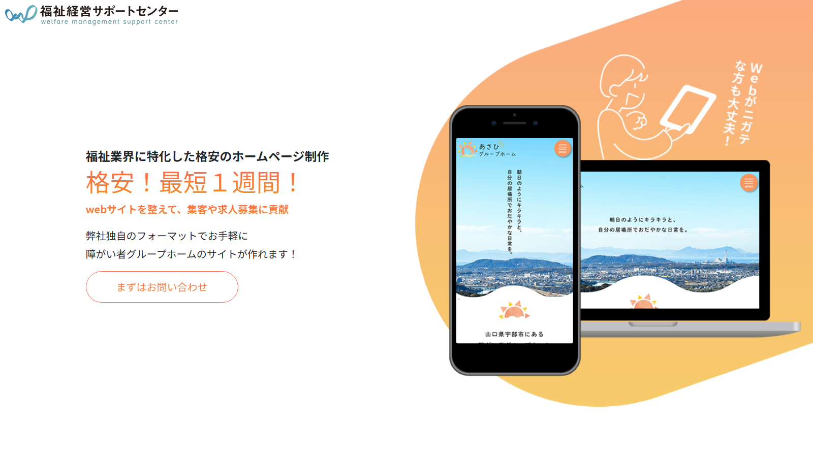
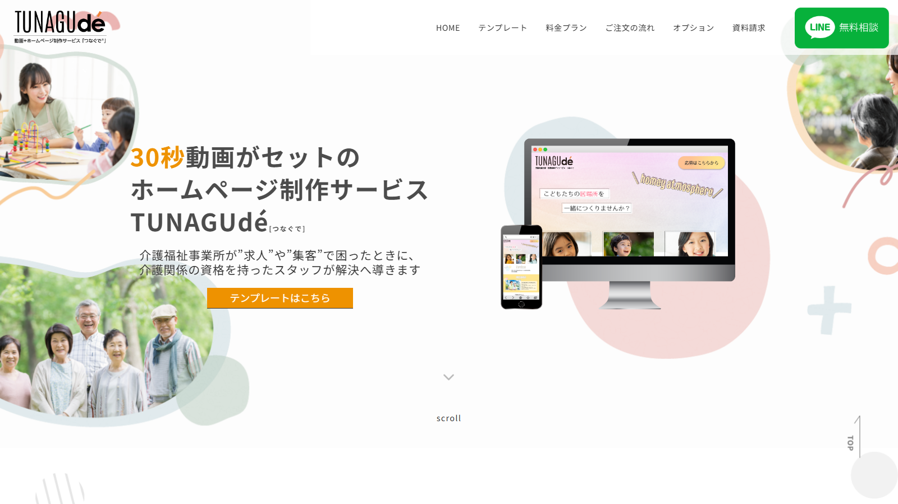

障害者グループホーム向けのホームページ制作サービスは、費用だけでなく、グループホームへの理解、デザイン、相談のしやすさ、公開後の支援内容にも違いがあります。
費用を抑えたい方、短期間で作りたい方、デザインや集客まで任せたい方など、重視するポイントによって適した依頼先は異なります。
まずは比較表と目的別おすすめから、ご自身に合う選択肢をご確認ください。
目次

まずは4社の特徴を一覧で比較できます。詳しい説明は後半でご紹介します。
| 比較項目 | 福祉経営サポートセンターテンプレート型 | TUNAGUdé動画・デザイン重視型 | 福祉ITパートナー福祉特化型 | ココナラスキル販売・個人制作者 |
|---|---|---|---|---|
| 制作料金 | 55,000円～ | 220,000円～ | 19,800円～ | 20,000円～ |
| 1年目総額の目安 | 121,000円～ 制作費55,000円＋月額5,500円×12か月 |
220,000円～ サーバー・ドメイン等の費用は要確認 |
約31,000～34,000円 制作費、ドメイン取得代行、公開・独自ドメイン接続設定、独自ドメイン実費を含む目安。任意の月額サポートは別 |
30,000～500,000円程度 出品者や制作方法により異なる |
| 障害者グループホームへの理解 | ◎ | ○ | ◎ | △ |
| デザインの自由度 | △ | ◎ | △ | ○ |
| 公開までの早さ | ◎ 最短約1週間 | － 公式サイトで要確認 | ◎ 通常14日、素材がそろえば最短48時間～ | △ 出品者により異なる |
| 公開後のサポート | ◎ 月額費用内で更新支援あり | ○ 納品後2か月の運用サポートあり | ○ 希望者のみ月額サポートあり | △ 出品者により異なる |
| 相談のしやすさ | ○ | ○ | ◎ | △ |
| こんな方におすすめ | グループホーム専用のテンプレートで早く開設したい方 | 動画を使って事業所の雰囲気や魅力をしっかり伝えたい方 | 費用を抑えながら、福祉を理解した相手へ相談したい方 | 多くの出品者から予算やデザインを比較して選びたい方 |
※料金・目安は2026年7月時点の公式情報をもとにした概算です。制作内容やオプションにより変動する場合があります。
※福祉経営サポートセンターの1年目総額は、月額サポート費用5,500円を利用する通常ケースの目安です（サーバーを自身で契約する場合など、別プランを選べる場合があります）。
※TUNAGUdéのサーバー・ドメイン・保守にかかる費用は、公式サイトで確認できなかったため、金額の記載を控えています。詳細は公式サイトでご確認ください。
※ココナラは出品者ごとに料金・対応範囲が異なります。上記は特定の出品者を示すものではありません。


福祉経営サポートセンター

公式サイトを見る ↗障害者グループホームなどの福祉事業を実際に運営している事業者によるホームページ制作サービスです。福祉事業に必要な情報をまとめたテンプレートを活用し、制作費を抑えながら、最短約1週間での公開を案内しています。
制作費55,000円と、月額5,500円を12か月利用した場合の目安です。
メリット
- 障害者グループホームの運営経験がある
- 福祉事業に必要なページをまとめた構成を利用できる
- 最短約1週間での公開を案内している
- 月額費用内で更新支援を受けられる
注意点
- テンプレート型のため、デザインの自由度には限りがある
- 月額費用が継続して発生する
- 希望する機能やページ数によっては追加確認が必要
こんな方におすすめ
グループホーム向けの構成で早く公開したい方、自分で掲載内容を一から考えることに不安がある方、公開後の更新も継続して相談したい方
TUNAGUdé

公式サイトを見る ↗介護・福祉事業所向けに、動画付きホームページを制作するサービスです。文章や写真だけでは伝わりにくい施設の雰囲気や、スタッフ、支援内容などを動画やアニメーションで表現できます。
アニメーション動画と、縦長1ページのホームページ制作を含むプランです。
サーバー、ドメイン、保守などの継続費用は、契約前に確認が必要です。
メリット
- 動画で施設や支援の雰囲気を伝えやすい
- 介護・福祉分野に特化している
- スマートフォン対応のページを制作できる
- 納品後2か月の運用サポートがある
注意点
- 他社と比べて初期費用が高め
- 基本プランは縦長1ページの構成
- 動画の素材や原稿を準備する必要がある
- サーバーやドメイン等の費用は事前確認が必要
こんな方におすすめ
動画で施設の雰囲気や魅力を伝えたい方、入居希望者や家族に安心感を与えたい方、採用や見学の問い合わせにも活用したい方
福祉ITパートナー
 公式サイトを見る ↗
公式サイトを見る ↗
精神保健福祉士が運営する、福祉事業所・福祉団体向けのホームページ制作サービスです。費用を抑えながら、グループホームの支援内容、暮らしの様子、見学や問い合わせに必要な情報を相談して整理できます。
制作費、ドメイン取得代行、公開・独自ドメイン接続設定、独自ドメイン実費を含む目安です。
無料の公開環境を利用し、任意の月額サポートは別料金です。
メリット
- 精神保健福祉士へ相談できる
- 初期費用と維持費を抑えやすい
- 福祉事業所に必要な内容を一緒に整理できる
- 希望者だけ月額サポートを利用できる
- 通常14日、素材がそろえば最短48時間から対応可能
注意点
- 大規模サイトや複雑な機能には向かない場合がある
- 無料公開環境を利用するプランでは制約がある
- 写真や文章などの素材準備が必要になる場合がある
こんな方におすすめ
費用を抑えてホームページを作りたい方、福祉を理解した相手に相談したい方、必要な情報を一緒に整理してほしい方、月額契約を必須にしたくない方
ココナラ
 公式サイトを見る ↗
公式サイトを見る ↗
多数の個人制作者や制作事業者から、料金、デザイン、実績、口コミを比較して依頼できるスキルマーケットです。低価格のサービスから本格的なWordPress制作まで幅広く、希望条件に合う出品者を自分で探せます。
出品者、ページ数、制作方法、サーバー、ドメイン、保守契約などにより大きく異なります。
メリット
- 多くの出品者を比較できる
- 低価格のサービスが見つかる場合がある
- デザインや制作方法の選択肢が多い
- 口コミや実績を確認して依頼できる
注意点
- 福祉分野への理解は出品者ごとに異なる
- 料金に含まれる作業範囲の確認が必要
- サーバーやドメインが別料金の場合がある
- 納品後のサポート内容も出品者ごとに異なる
こんな方におすすめ
複数の制作者を比較して決めたい方、予算やデザインに細かな希望がある方、自分で出品内容や実績を確認できる方

総額、納期、月額料金など、依頼前に確認しておきたい項目をまとめました。
| 比較項目 | 福祉経営サポートセンターテンプレート型 | TUNAGUdé動画・デザイン重視型 | 福祉ITパートナー福祉特化型 | ココナラスキル販売・個人制作者 |
|---|---|---|---|---|
| 初期費用 | 55,000円～ | 220,000円～ | 19,800円～ | 20,000円～ |
| 1年目総額の目安 | 121,000円～ 制作費55,000円＋月額5,500円×12か月 |
220,000円～ サーバー・ドメイン・保守等は要確認 |
約31,000～34,000円 任意の月額サポートは別 |
30,000～500,000円程度 出品者や制作方法により異なる |
| 月額費用 | 5,500円 | 要確認 | 月額契約は任意 | 出品者により異なる |
| ページ構成・制作形式 | グループホーム向けテンプレート型 | 動画付きの縦長1ページ型 | 必要な内容を相談して制作 | 出品者・プランにより異なる |
| 公開までの目安 | 最短約1週間 | 公式サイトで要確認 | 通常14日 素材がそろえば最短48時間～ |
出品者により異なる |
| 公開後のサポート | 月額費用内で更新支援あり | 納品後2か月の運用サポート | 希望者のみ月額サポート | 出品者により異なる |
| 障害者グループホームへの理解 | ◎ 福祉事業の運営経験あり | ○ 介護・福祉分野に特化 | ◎ 精神保健福祉士が運営 | △ 出品者により異なる |
| 向いている事業者 | 専用テンプレートで早く公開したい事業者 | 動画で施設の雰囲気を伝えたい事業者 | 費用を抑え、福祉を理解した相手に相談したい事業者 | 多数の出品者を比較して選びたい事業者 |
※料金は各社の公開情報をもとにした目安です。ページ数、機能、素材の準備状況などにより、実際の費用や制作期間は変わる場合があります。
※TUNAGUdéのサーバー、ドメイン、公開後の継続費用は、契約前に確認が必要です。
※ココナラは出品者ごとに料金や対応範囲が異なるため、サービス内容を個別に確認してください。

障害者グループホームのホームページでは、見た目や料金だけでなく、入居希望者や家族、相談支援事業所に必要な情報が伝わるかどうかが重要です。
制作会社を選ぶ際は、次の5つのポイントを確認しましょう。
障害福祉への理解があるか
グループホームのホームページでは、支援内容や入居対象者、生活の様子などを分かりやすく伝える必要があります。
障害福祉への理解がある制作者であれば、専門的な内容を整理しながら、本人や家族にも伝わりやすい表現を相談できます。
確認ポイント
- 障害福祉事業の制作実績や運営経験があるか
- 福祉制度や支援内容への理解があるか
- 専門用語を分かりやすく整理してくれるか
必要な情報を掲載できるか
入居を検討する方や家族は、支援内容だけでなく、費用、設備、対象者、見学方法などを確認しています。
必要な情報が不足すると、問い合わせ前の不安を解消できません。
確認ポイント
- 支援内容や1日の流れを掲載できるか
- 利用料金や入居条件を分かりやすく示せるか
- 居室、設備、食事などの生活情報を掲載できるか
- 見学や問い合わせへの導線を設置できるか
スマートフォンで見やすいか
本人や家族、支援者の多くは、スマートフォンからホームページを閲覧します。
文字が小さい、表が見切れる、問い合わせボタンが押しにくいといった状態は、離脱の原因になります。
確認ポイント
- スマートフォン表示に対応しているか
- 文字やボタンが見やすいか
- 電話や問い合わせフォームへ進みやすいか
- ページの表示速度に問題がないか
制作後の費用とサポートを確認する
ホームページは制作費だけでなく、サーバー、ドメイン、保守、更新などの費用が継続して発生する場合があります。
初期費用だけで判断せず、1年間に必要な総額と、公開後にどこまで対応してもらえるかを確認しましょう。
確認ポイント
- サーバーやドメイン費用が含まれているか
- 月額費用や更新費用が必要か
- 文章や写真の変更を依頼できるか
- 自分たちで更新できる仕組みか
問い合わせにつながる構成か
ホームページの目的は、情報を掲載するだけではなく、見学、入居相談、採用などの行動につなげることです。
誰に何を伝えたいのかを整理し、問い合わせまで迷わず進める構成になっているかを確認してください。
確認ポイント
- 見学や入居相談のボタンが分かりやすいか
- 電話番号や受付時間が掲載されているか
- 空室状況や募集情報を更新できるか
- 採用情報への導線も設置できるか
制作会社を選ぶ際は、料金の安さだけでなく、障害福祉への理解、掲載できる情報、公開後の費用やサポートまで比較することが大切です。
自社がホームページで実現したいことを整理し、目的に合った制作会社を選びましょう。

障害者グループホーム向けのホームページ制作サービスは、料金だけでなく、制作方法、福祉への理解、公開までの期間、公開後のサポートに違いがあります。
自社が重視するポイントを整理したうえで、目的に合った依頼先を選ぶことが大切です。
目的に合わない制作サービスを選ぶと、必要な情報を掲載できなかったり、想定以上の維持費が発生したりする場合があります。
制作前に、ホームページで伝えたい内容、予算、公開希望時期、公開後の更新方法を整理し、複数のサービスを比較して選びましょう。
本記事の比較について

本記事は、各サービスの公式サイトで公開されている情報をもとに、障害者グループホーム事業者が比較しやすいよう整理したものです。
料金やサービス内容は変更される場合があるため、依頼前に各公式サイトで最新情報をご確認ください。
本記事は福祉ITパートナーが作成していますが、特定のサービスを一方的に推奨することを目的としたものではありません。